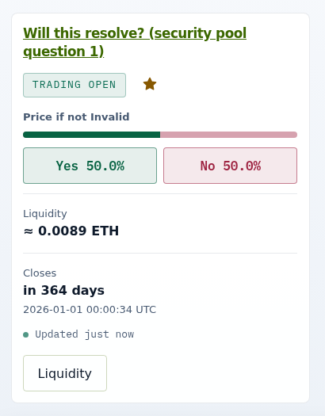
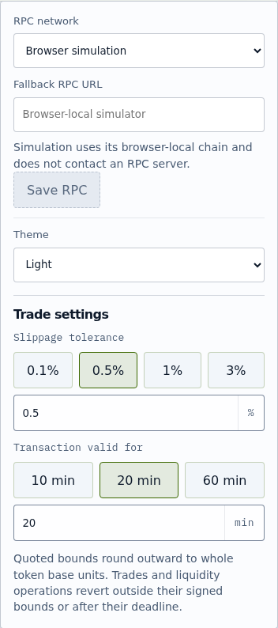
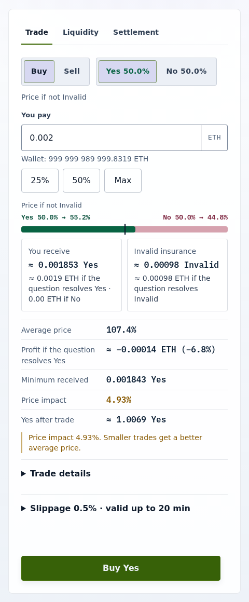
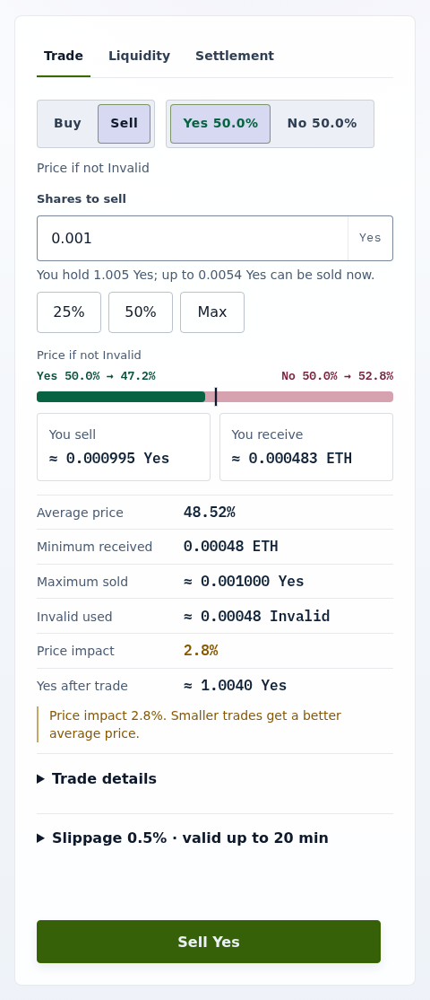

Tutorial
Your first trade
Buy Yes in the simulator and sell part of it for ETH. After the purchase, both Yes and Invalid balances rise. The sale spends some Invalid.
Before you start
Run bun run app:serve:trading and open http://localhost:4163/?simulate=1&genesis=yes#/market/0x1880Da9715c92B196C75955A91cC14DBE15c5041. No wallet extension or live funds are needed. For a live network, see Configure the Trading UI.
Check the market
Check for the TRADING OPEN badge on the seeded market.

Set your protection
Keep the default Slippage tolerance of 0.5% and Transaction valid for of 20 minutes.

Buy Yes
- In the market's Trade tab, select Buy and Yes.
- Enter
0.002in You pay. Check You receive, Invalid insurance, and Minimum received. The simulated trade includes the pool’s minimum purchase fee, so its profit estimate is negative. - Check that Price impact reads 4.93%.
- Select Buy Yes and wait for confirmation.

After confirmation, check that Yes and Invalid increased under Your position. See Invalid insurance for how entry creates both balances.
Sell Yes
- Select Sell and Yes, then enter
0.001in Shares to sell. - Check You receive in ETH, Minimum received, and Invalid used.
- Select Sell Yes and wait for confirmation. No approval is needed: the sale is one ShareToken transfer of your Yes and Invalid to the router.

After confirmation, check that your wallet received ETH and your Invalid balance fell by the quoted amount. To sell a larger amount, see Exit an insured position.